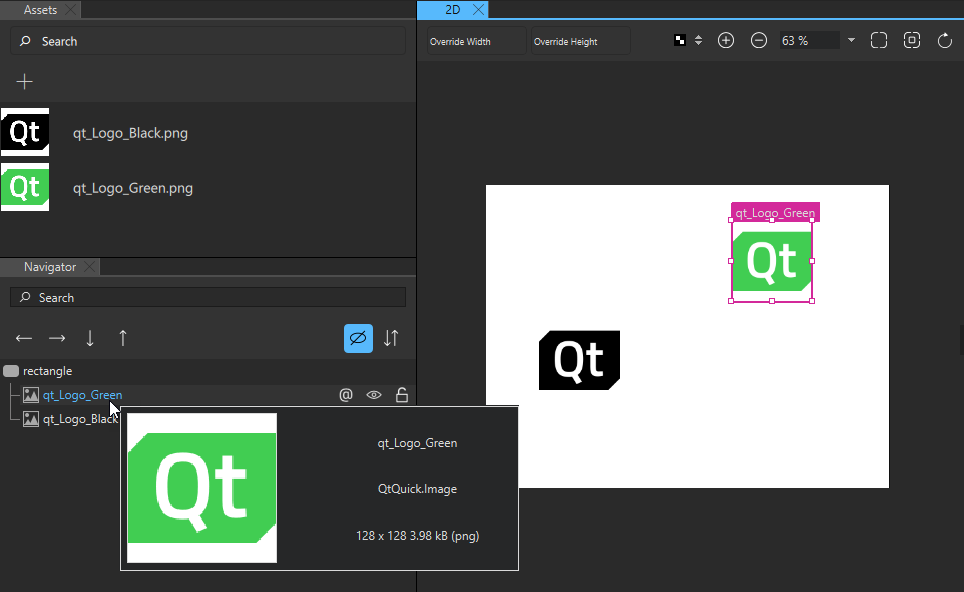
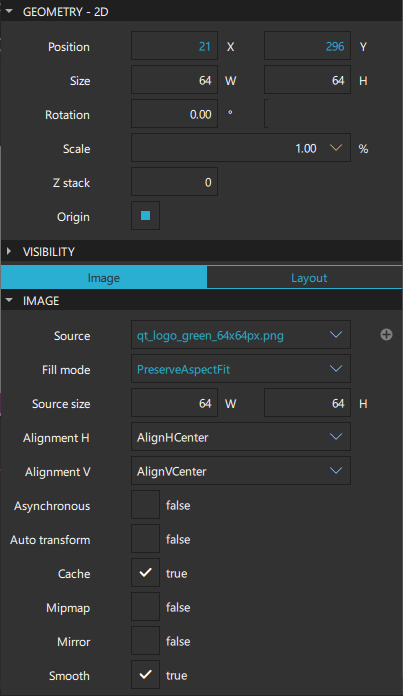
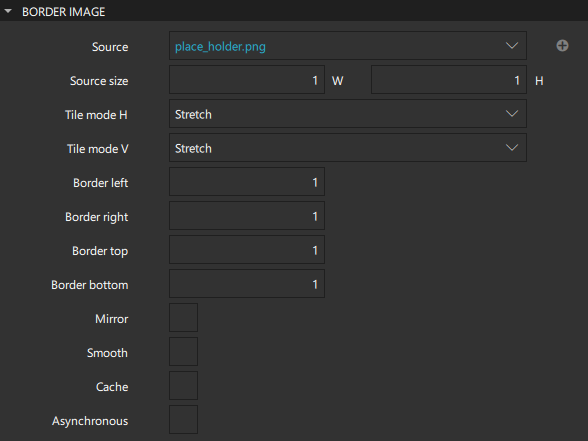
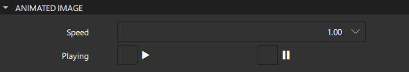
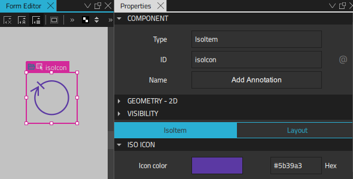
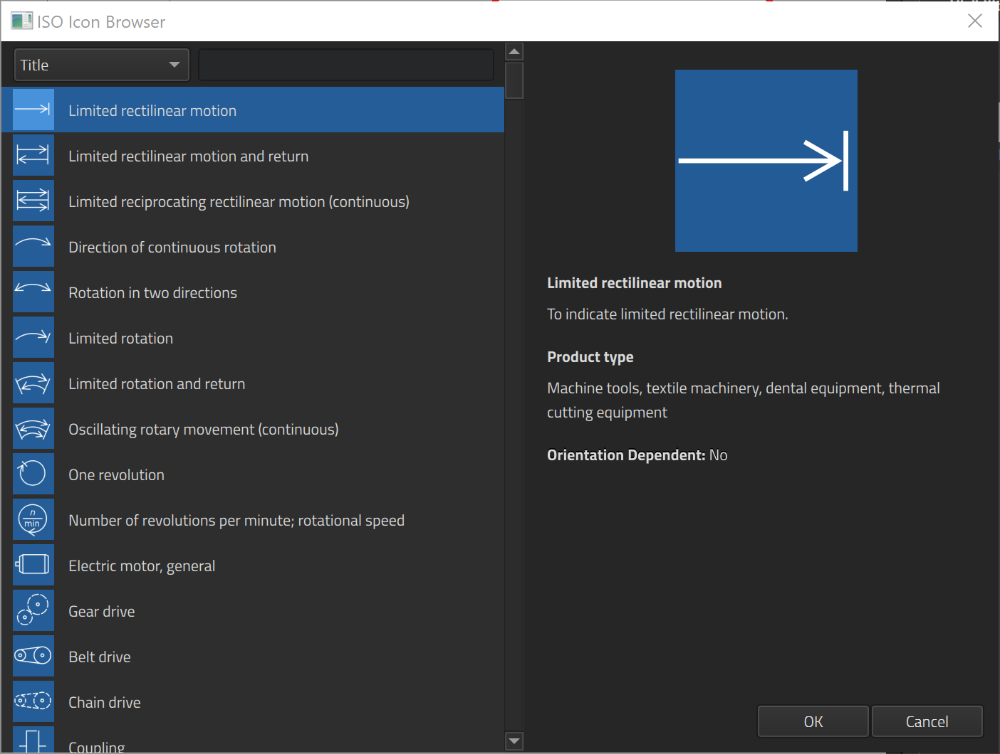

Images
The Image component is used for adding images to the UI in several supported formats, including bitmap formats, such as PNG and JPEG, and vector graphics formats, such as SVG. To use any image files in your designs, you need to first add them to Assets:
- Select Assets >
 .
. - Select the image file, and then select Open.
- Select the location where the image will be saved in the Add Resources dialog.
- Select OK.
Your image is now available in Assets.

When you drag-and-drop an image file from Assets to Navigator or the 2D view, Qt Design Studio automatically creates an instance of the Image component for you with the path to the image file set as the value of the Source field in Properties.
To load images from a URL using a supported URL scheme, specify the URL in the Source field.
You can use the Border Image component to display an image, such as a PNG file, as a border and a background. For more information about using border images to create buttons, see Creating Scalable Buttons and Borders.
If you need to display animated images, such as GIFs, use the Animated Image component.
Image Size

If the image Size is not specified, the size of the source image is used automatically.
By default, explicitly setting the width and height of the component causes the image to be scaled to that size. To change this behavior, set the value of the Fill mode field. Images can be stretched, tiled, or scaled uniformly to the specified size with or without cropping. The Pad option means that the image is not transformed.
Note: If the Clip check box is not selected, the component might paint outside its bounding rectangle even if the Fill mode is set to PreserveAspectCrop.
Select the Smooth check box to smoothly filter images when scaled or transformed. Smooth filtering gives better visual quality, but it may be slower on some hardware. If the image is displayed at its natural size, this property has no visual or performance effect.
Select the Mipmap check box to use mipmap filtering when scaling or transforming images. Mipmap filtering gives better visual quality when scaling down compared with smooth filtering, but it may come at a performance cost both when initializing the image and during rendering.
Select the Auto transform check box if the image should automatically apply image transformation metadata, such as EXIF orientation.
Source Size
The Source size property specifies the scaled width and height of the full-frame image. Unlike the value of the Size property, which scales the painting of the image, this property sets the maximum number of pixels stored for the loaded image so that large images do not use more memory than necessary. This ensures the image in memory is no larger than the set source size, regardless of its set size.
If the image's actual size is larger than the source size, the image is scaled down. If only one dimension of the size is set to greater than 0, the other dimension is set in proportion to preserve the source image's aspect ratio. The Fill mode is independent of this.
If both the source size width and height are set, the image is scaled down to fit within the specified size maintaining the image's aspect ratio. However, if PreserveAspectCrop or PreserveAspectFit are used, the image is scaled to match the optimal size for cropping or fitting.
If the source is an intrinsically scalable image (such as SVG), source size determines the size of the loaded image regardless of intrinsic size. Avoid changing the source size property dynamically because rendering an SVG is slow compared with rendering other image formats.
If the source is a non-scalable image (such as JPEG), the loaded image will be no greater than the source size specifies. For some formats, the whole image will never actually be loaded into memory.
Note: Changing this property dynamically causes the image source to be reloaded, potentially even from the network, if it is not in the disk cache. Select the Cache check box to cache the image.
Image Alignment
You can align images horizontally and vertically in the Alignment H and Alignment V fields. By default, images are centered.
Select the Mirror check box to horizontally invert the image, effectively displaying a mirrored image.
Performance
By default, locally available images are loaded immediately, and the UI is blocked until loading is complete. If a large image is to be loaded, it may be preferable to load the image in a low priority thread, by selecting the Asynchronous check box. If the image is obtained from a network rather than a local resource, it is automatically loaded asynchronously.
Images are cached and shared internally, so if several images have the same Source, only one copy of the image will be loaded.
Note: Images are often the greatest user of memory in UIs. We recommended that you set the Source size of images that do not form a part of the UI. This is especially important for content that is loaded from external sources or provided by the user.
Border Image
The Border Image component extends the features of the Image component. It is used to create borders out of images by scaling or tiling parts of each image. A source image is broken into 9 regions that are scaled or tiled individually. The corner regions are not scaled at all, while the horizontal and vertical regions are scaled according to the values of the Tile mode H and Tile mode V field, or both.
The Stretch option scales the image to fit the available area. The Repeat option tiles the image until there is no more space. To ensure that the last image is not cropped, select the Round option that scales the images down when necessary.
Specify the regions of the image in the Border left, Border right, Border top, and Border bottom fields. The regions describe the distance from each edge of the source image to use as a border.

Note: You cannot change the Source size of a border image.
For examples of using border images, see the documentation of the BorderImage component.
Animated Image
The Animated Image component extends the features of the Image component, providing a way to play animations stored as images containing a series of frames, such as those stored in GIF files.
Set the speed of the animation in the Speed field. The speed is measured in percentage of the original animated image speed. The default speed is 1.0, which means the original speed.

To play the animation, select the Playing check box.
To pause the animation, select the  (Paused) check box.
(Paused) check box.
When the Cache check box is selected, every frame of the animation is cached. Deselect the check box if you are playing a long or large animation and you want to conserve memory.
If the image data comes from a sequential device (such as a socket), Animated Image can only loop if caching is enabled.
For more information, watch the following video:
Iso Icon
Note: The Iso Icon component is not available if you selected Qt 6 when creating the project.
The Iso Icon component specifies an icon from an ISO 7000 icon library as a Picture component. The icon to use for the type and its color can be specified.
To select an icon in the ISO Icon Browser in Qt Design Studio, select the ISO icon in the Navigator or 2D view, and then select Choose Icon in the context menu.

You can use the color picker in Properties to set the value of Icon color.

Summary of Images
The following table lists the components that you can use to add images. The Location column contains the tab name where you can find the component in Components. The MCU column indicates which components are supported on MCUs.
| Icon | Name | Location | MCU | Purpose |
|---|---|---|---|---|
| Animated Image | Default Components - Basic | An images that stores animations containing a series of frames, such as those stored in GIF files. | ||
| Border Image | Default Components - Basic |  | An image that is used as a border or background. | |
| Image | Default Components - Basic | | An image in one of the supported formats, including bitmap formats such as PNG and JPEG and vector graphics formats such as SVG. | |
| Iso Icon | Qt Quick Studio Components | An icon from an ISO 7000 icon library specified as a Picture component. You can select the icon to use and its color. Note: This component is not supported on Qt 6. |